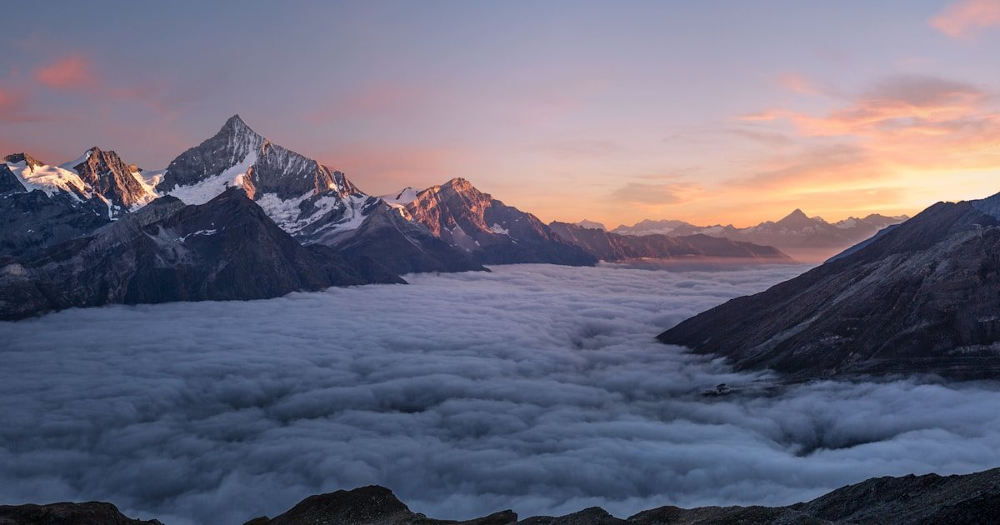
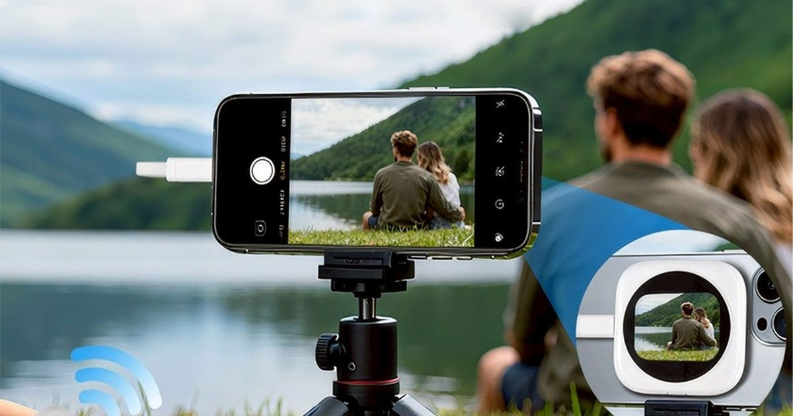
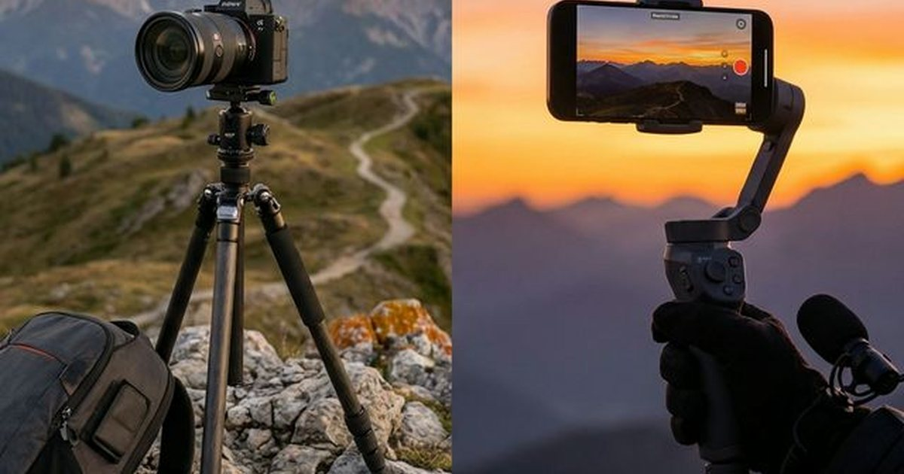
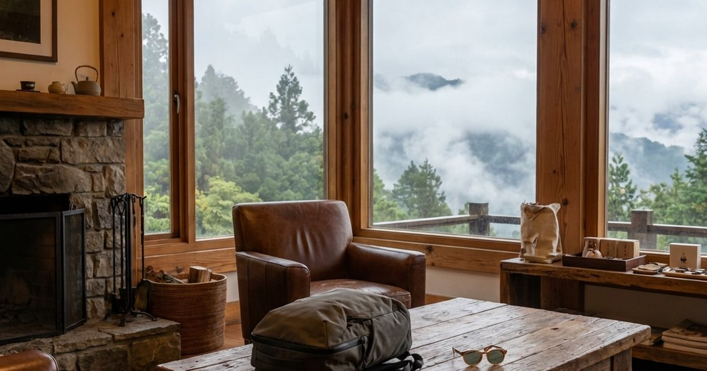
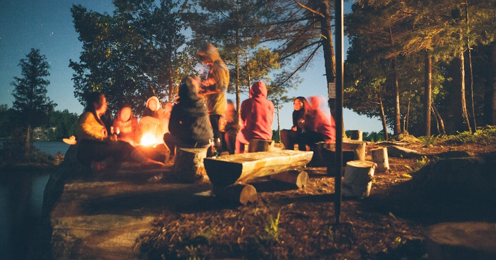
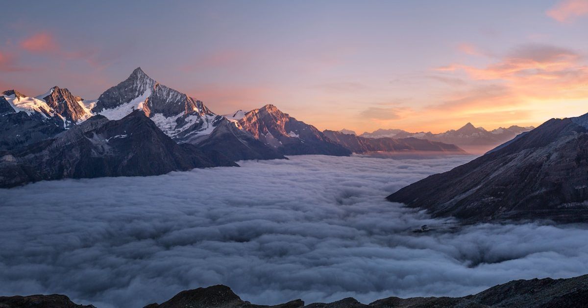
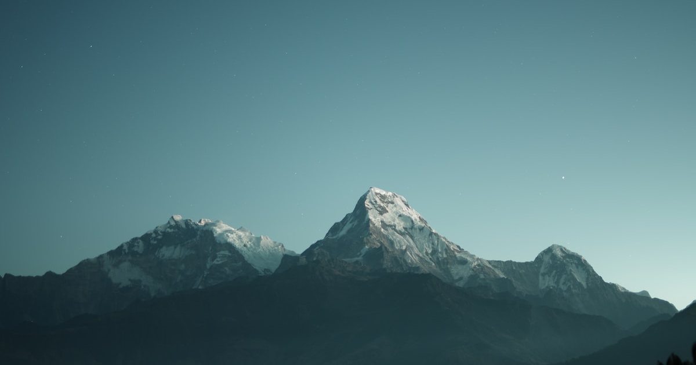
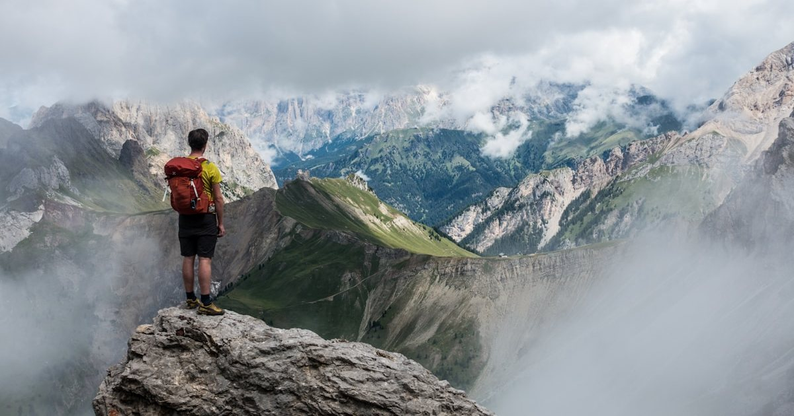

旅行與戶外移動準備指南
從週末出行、城市散步、登山、露營、機上睡眠與拍攝設備，整理更輕盈也更安全的移動順序。
進入主題 →連結時尚與自然探險的無限可能。我們介紹最新的戶外機能裝備、風格化的露營與登山穿搭，以及高端旅行的目的地。 旨在鼓勵讀者將精英生活方式延伸至戶外，體驗一種既充滿冒險精神又不失格調的自然之美。
先從完整策展頁掌握順序，再進入單篇文章。
收錄最新戶外與旅行內容，從裝備、路線到移動中的生活感，一起往外走。

日系露營入門先從桌椅穩定、爐具條件、杯具與收納開始，再談風格完整度。
閱讀全文 →
新手登山裝備要先處理天氣、支撐與收納，再談品牌完整度和風格小物。
閱讀全文 →
箱包系統要先用旅程天數與拿取頻率決定箱體，再比較前開式行李箱、登機箱與收納袋。
閱讀全文 →
一日旅行的採買順序是防曬與電力先行，再補睡眠、雨天備案與小包位置，包內不要只靠直覺亂塞。
閱讀全文 →
從日蝕海岸、百年公路到火山島慢旅，整理五個 2026 值得被看見的目的地。
閱讀全文 →
家庭旅行不只要帶箱包，也要讓閱讀、看路、找票與戶外光線都有清楚的位置。
閱讀全文 →
從長途旅行頸部痠痛、姿勢不良到補眠效率不足，解析 Horizon X-Space 太空漂浮安眠脖枕如何用調節式固定扣與高效率支撐，重寫旅行恢復感...
閱讀全文 →
少帶一台器材，卻多一點畫面掌握。從海邊、山景到城市街拍，解析 DA 如何用 33g 輕量、850 nits 亮度與後鏡頭即時預覽，讓旅拍更自在...
閱讀全文 →從新手友善的陽明山到壯麗的玉山主峰，結合專業穿搭指南，讓每一張攻頂照都像時尚雜誌封面...
閱讀全文 →落地即連網是數位遊牧的基本人權。評測 Airalo eSIM 的全球覆蓋率與性價比，教您如何擺脫昂貴的國際漫遊與換卡焦慮，並搭配 NordVPN 確保資安...
閱讀全文 →
手機攝影已經足夠強大，但專業全片幅相機仍有其戰場。深度對比 Sony A7IV 與 iPhone 15 Pro Max 在低光、景深與工作流的差異，分析內容創作者的 ROI...
閱讀全文 →從「不留痕跡」進化到「積極修復」。探索 2026 年精英階層如何重新定義戶外探險，結合減碳美學與生態責任...
閱讀全文 →
當極簡主義遇上極限機能。探索 2026 年最受矚目的戶外穿搭風格：Quiet Gorpcore，實現都會與山林的無縫切換...
閱讀全文 →面對劇烈變化的自然環境，2026 年的戶外穿搭已演變為「主動適應」。解析 AI 層疊穿搭系統與 PCM 相變材料...
閱讀全文 →深入解析登山背包背負系統的奧秘，從肩帶調整到腰帶支撐，教你如何選擇適合的登山包， 讓長途健行不再肩背痠痛。專為百岳挑戰者、週末健行家設計的完整指南...
閱讀全文 →
Glamorous Camping不僅是一種露營方式，更是一種生活態度。從精心設計的帳篷到質感戶外家具， 從美食料理到氛圍燈光，探索如何在大自然中創造舒適優雅的生活空間，享受五星級的露營體驗...
閱讀全文 →從Arc'teryx的極簡設計到Patagonia的永續理念，從The North Face的專業性能到Snow Peak的精緻工藝， 當代戶外品牌正在突破機能與美學的界限。精選本季最值得投資的戶外裝備與穿搭建議...
閱讀全文 →
從東北角的岩岸地形到墾丁的珊瑚礁海岸，從花東的峭壁海景到西海岸的夕陽沙灘， 台灣擁有豐富多樣的海岸風貌。帶您探訪絕美海岸秘境，並提供最適合的海邊穿搭建議...
閱讀全文 →
日本的森林浴文化正在全球興起。漫步於芬多精豐富的森林步道，聆聽鳥鳴與風聲，感受大自然的療癒力量。 推薦台灣最適合森林浴的秘境步道，以及舒適的森林穿搭建議，讓您完全沉浸在綠色懷抱中...
閱讀全文 →
從日出的金色時刻到星空銀河，從山巒雲海到溪流瀑布，大自然提供了無窮無盡的攝影題材。 學習戶外攝影的構圖技巧、光線運用與後製處理，同時了解如何選擇適合的攝影裝備...
閱讀全文 →把旅行、城市移動與戶外裝備放回真實路線。
先看路線與移動方式，再依安全、重量、收納、防雨、防曬與補給順序準備，不必一開始就追求完整裝備。
可以，但要看重量、收納、耐候性與外觀正式度；真正常用的單品通常能在兩種場景間切換。
適合週末出行、城市散步、登山、露營、機上休息、旅拍設備與家庭旅行前的清單整理。
依更新時間整理，方便從主題分類頁直接進入所有相關文章。